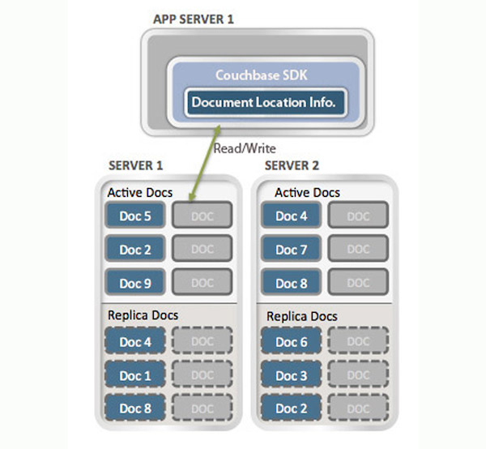

Developing applications
Before you develop applications on the Couchbase Server, you will want to understand key concepts and components that are related to application development on Couchbase Server. For more information about underlying functions of Couchbase Server, data storage, and cluster management, see the Couchbase Server Manual.
Couchbase as document store
The primary unit of data storage in Couchbase Server is a JSON document, which is a data structure capable of holding arrays and other complex information. JSON documents are information-rich, flexible structures that enable you to model objects as individual documents. By using JSON documents to model your data, you can construct your application data as individual documents which would otherwise require rigidly-defined relational database tables. This provides storage for your web application which is well suited to serialized objects and the programming languages that use them.
Because application objects are modeled as documents, schema migrations do not need to be performed. The documents and the fields they store indicate the relationships between application objects; therefore, to update the structure of objects you store, change the document structure that is written to Couchbase Server.
When Couchbase Server is used as a store for JSON documents, the records can be indexed and queried. Couchbase Server provides a JavaScript-based query engine to find records based on field values. For more information, see Finding data with views.
For more information about working with JSON documents and Couchbase, see Modeling documents.
Data buckets
Your web application stores data in a Couchbase cluster using buckets. Buckets are isolated, virtual containers which logically group records within a cluster; they are the functional equivalent to a database. Buckets can be accessed by multiple client applications across a cluster. They provide a secure mechanism for organizing, managing and analyzing data storage. As an application developer you will most likely create buckets for your development and production environment.
Keys and metadata
All information that you store in Couchbase Server are documents with keys. Keys are unique identifiers for a document, and values are either JSON documents or if you choose the data you want to store can be byte stream, data types, or other forms of serialized objects.
Keys are also known as document IDs and serve the same function as a SQL primary key. A key in Couchbase Server can be any string, including strings with separators and identifiers, such as person_93679. A key is unique.
By default, all documents contain metadata that is provided by the Couchbase Server. The metadata is stored with the document and is used to change how the document is handled.
-
CAS Value—Also called CAS token or CAS ID, this value is a unique identifier associated with a document that is verified by the Couchbase Server before a document is deleted or changed and provides a form of basic optimistic concurrency. When Couchbase Server checks a CAS value before changing data, it effectively prevents data loss without having to lock records. Couchbase Server prevents a document from being altered by an operation if another process alters the document and its CAS value, in the meantime.
-
Time to Live (TTL)—This is an expiration for a document typically specified in seconds. By default, any document created in Couchbase Server that does not have a given TTL will have an indefinite life span and will remain in Couchbase Server unless an explicit delete call from a client removes it. The Couchbase Server will delete values during regular maintenance if the TTL for an item has expired.
Note: The expiration value deletes information from the entire database. It has no effect on when the information is removed from the RAM caching layer. - Flags—These are SDK- specific flags which are used to provides a variety of options during storage, retrieval, update, and removal of documents. Typically flags are optional metadata used by a Couchbase client library to perform additional processing of a document. An example of flags include the ability to specify that a document be formatted a specific way before it is stored.
Couchbase SDKs
Couchbase SDKs, sometimes also referred to as client libraries, are the language-specific SDKs provided by Couchbase and third-party providers that are installed on your web application server. A Couchbase SDK is responsible for communicating with the Couchbase Server and provides language-specific interfaces your web application can use to perform database operations.
All Couchbase SDKs automatically read and write data to the right node in a cluster. If database topology changes, the SDK responds automatically and correctly distributes read/write requests to the right cluster nodes. Similarly, if your cluster experiences server failure, SDKs will automatically direct requests to still-functioning nodes. SDKs are able to determine the locations of information, the status of nodes, and the status of the cluster using a REST API for administration.
The following diagram shows a single web application server, the Couchbase SDK, and a Couchbase Server cluster. In real deployments, multiple web application servers can communicate via a Couchbase SDK to a cluster.
Nodes and clusters
You deliver your application on several grouped servers, also known as a cluster. Each cluster consists of multiple nodes :
-
Couchbase Server or Node: A node is a single instance of a Couchbase Server running on a physical or virtual machine, or other environment.
-
Cluster: This is a collection of one or more nodes. All nodes in a cluster are identical in function, interfaces, components and systems. Couchbase Server manages data across nodes in a cluster. When you increase the size of a cluster, the cluster scales linearly; that is, there is no hierarchy or parent/child relationships between multiple nodes in a cluster.
Nodes or clusters typically reside on a separate physical machine than your web server. Your Couchbase node/cluster will communicate with your web application via a Couchbase SDK, which we describe in detail in this guide. Your application logic does not need to handle information about nodes or clusters; the Couchbase SDKs are able to automatically communicate with the appropriate Couchbase cluster node.
Information about the cluster
Your web application does not need to directly handle any information about where a document resides; Couchbase SDKs automatically retrieve updates from Couchbase Server about the location of items in a cluster. Multiple web application instances can access the same item at the same time using Couchbase SDKs.
How an SDK gets updates on cluster topology is a slightly more advanced topic and is mainly relevant for those developers who want to create their own Couchbase SDK. For instance developers who want to create a Couchbase SDK for a language not yet supported would be interested in this topic. For more information, see Getting cluster topology.